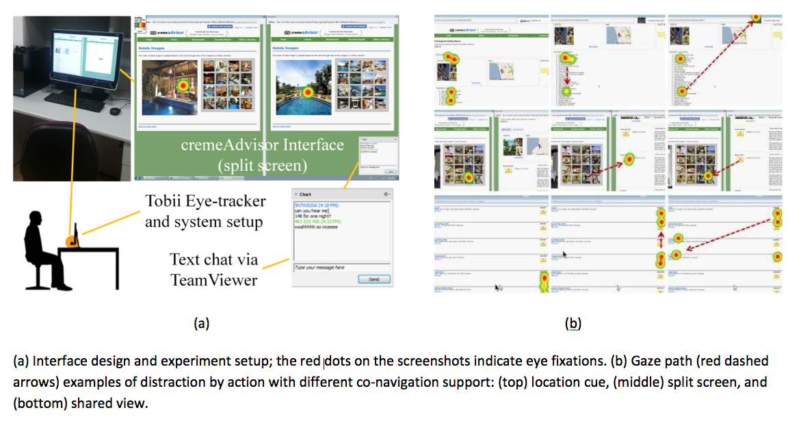

Abstract
Collaborative online shopping, an emerging paradigm in e-commerce, allows remote shoppers to extend purchase-oriented social interactions into the digital environment. Online vendors have been experimenting ways to facilitate this activity. However, more research needs to be done on identifying what feature can create a pleasing shopping experience and ultimately encourage spending. In this paper, we present an exploration of the impact of co-navigation supports, including location cue, split screen, and shared view, on the experiences and performance of 60 co-shopper dyads. We also studied if status composition of shopping companions played a role in this process. By analyzing about 1800 minutes of eye-tracking data, video footages, and web logs, we found that split screen encouraged more diverse product search, shared view enabled better coordination, and location cue was the least distracting. Co-buyers achieved better factual and inference understanding, though buyer-advisor dyads were more likely to stay together.
Materials
PDF |
Slides |
BibTeX